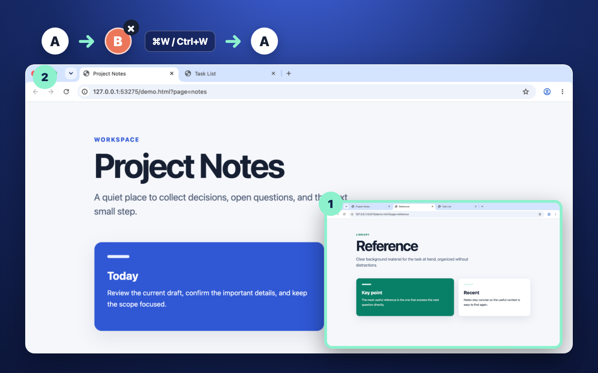
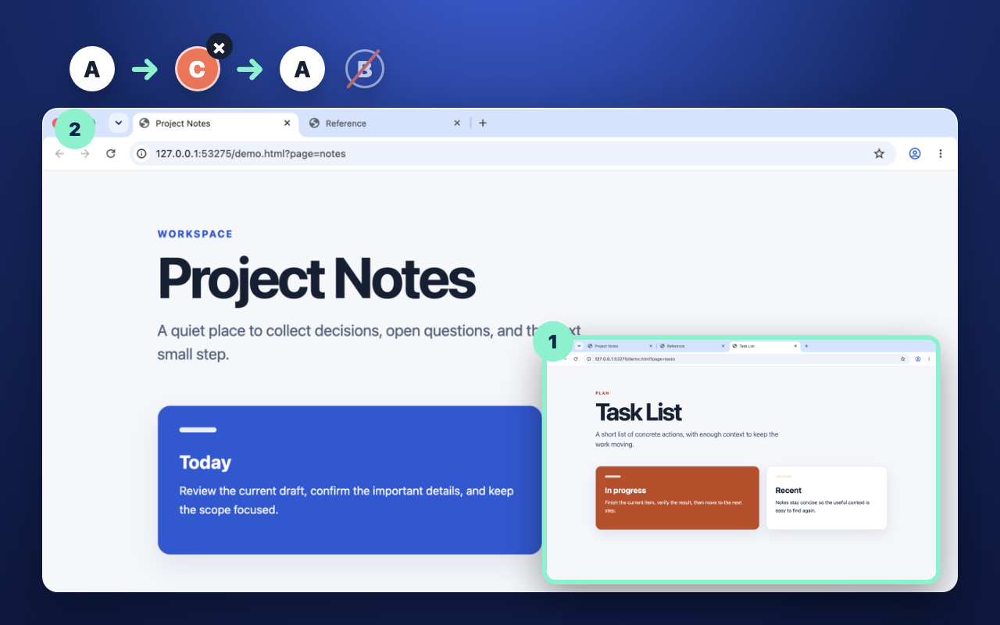
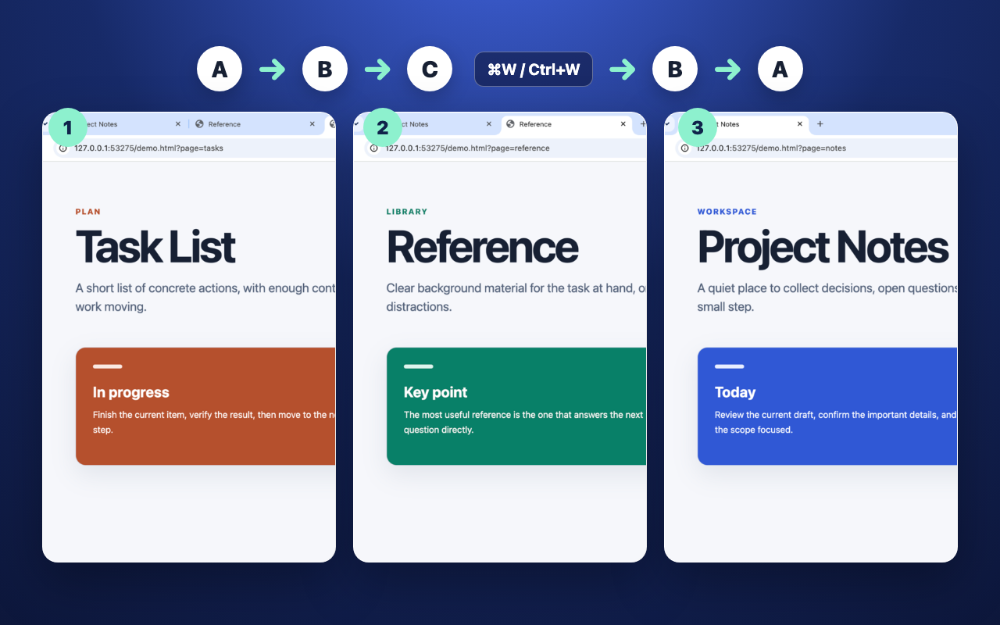

Tab-strip order
A · B · C
After moving from A to C, the neighboring tab is B.
Finished checking a link or reading a search result? Close the tab and return to the one you were just using. Install Last Tab Focus and browse as usual. There is nothing to set up.

When you close a tab, Chrome’s next selection can follow the tab strip rather than your recent path. That can break the simple expectation that closing the current page takes you back to what you were just reading.
Tab-strip order
After moving from A to C, the neighboring tab is B.
Your actual history
Last Tab Focus returns to A, because A was the previously active tab.
The extension changes focus only after the current tab closes. It does not add a popup or settings screen.

Use A, move to C, then close C. The focus returns to A instead of the neighboring tab B.

After using A → B → C, closing C returns to B. Closing B then returns to A.
Reopening a closed tab brings the closed page back. Last Tab Focus does something narrower: it chooses which already-open tab receives focus after the current tab closes.
Focus history is kept separately for each window, so the extension does not jump to another Chrome window.
No tab groups, side panel, session manager, saved workspace, account, or sync service.
Tab focus history stays in Chrome’s session storage and is used only to select the previous open tab.
No tracking script, cookie, or usage analytics.
No API calls, remote service, or external font request.
Your tab history is not transmitted anywhere.
Open two tabs, switch from A to B, then close B. If you return to A, it is working. You do not need to click the extension icon or open a settings screen.
No. The order resets when Chrome restarts. Switch between tabs to build a new history. Disabling or updating the extension also resets it.
If there is no earlier tab in its history, such as just after installation, Chrome chooses the next tab as usual. Try switching between two tabs in the same window, then close the current one. If the problem continues, please get in touch below.
Report a bug on GitHub with your Chrome version, extension version, operating system, the order you switched tabs, and what happened when you closed one. You can label tabs A, B and C; page contents and URLs are not needed. If you do not use GitHub, you can send an email.
No. Use Chrome’s reopen-closed-tab command for that. Last Tab Focus selects a still-open tab after the current tab closes.
Yes. It responds when Chrome closes the current tab, whether you use Ctrl+W on Windows/Linux, Command+W on macOS, the tab’s close button, or another standard close action.
No. It returns to the previously active tab in the same window.
No. There is no analytics, tracking, account, external communication, or browsing-data transmission. See the privacy policy for the exact scope.